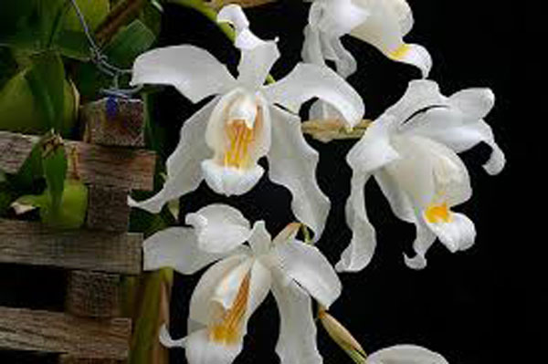

Characteristics of Orchids

There are some features common to all species, which make a plant included in the "orchidaceae family". The orchid flower has the feminine and masculine organ of reproduction fusing in only one body called a column or gynostemium. The flower has an irregular form. It has three sepals and three petals. The medium petal is modified and is called labellum or lip. It is, in general, intensively colored and is the most interesting part of the flower from where the scent is exhaled in order to attract the agent of pollination.Its form or scent can vary a lot: it can have the appearance of female bee (like Ophyrs), female wasp (like Drakea or Cryptostylis), a bucket (like Coryanthes), having a very sweet or disagreeable, strong or light perfume.
Orchids do a lot to attract pollinators to guarantee the reproduction of the species. Orchids are not parasites, as people believe, they aren't fed by the host, they only use it to fix themselves well. In general, they are epiphytic, living on the trees or on the rocks (in tropical zones) or terrestrial (temperate zones). Extremely diversified plants, orchids are found all around the world, except in the deserts, so it is always possible to find one species which can thrive in the conditions you can provide. Although they can be found at from sea-level to 4,000 meters in altitude, they are most numerous between 500 and 2,000 meters above the sea. Some orchid species are among the world's smallest flowering plant like Eurystyles or many Pleurothallidinae plants. Some others can reach 4 meters height like Selenipedium (growing in Tropical America) or Grammatophyllum papuanum (Papua-New Guinea). The number of genera is calculated at about 600, the number of species between 25,000 and 30,000 and the hybrids more than 100,000 already registered.
The geographical distribution is not regular around the world. There are a few genera which are represented in almost every continent but, in general, they have a restricted distribution:
Bulbophyllum: North, South and Central America, Africa, Asia and Oceania.
Cattleya, Epidendrum, Laelia, Masdevallia, Maxilaria, Odontoglossum, Oncidium, Pleurothallis: Northern Mexico, South and Central America.
Coelogyne: Asia.
Cymbidium: Africa, Asia , Oceania.
Cypripedium: North America, Europe, Asia and Oceania.
Dendrobium: Tropical and sub tropical Asia and Oceania.
Habenaria: North, Central and South America, Europe, Africa, Asia and Oceania.
Paphiopedilum: Asia and Oceania.
Phalaenopsis, Vanda, Renanthera: Asia.
Vanilla: North, Central and South America, Equatorial Africa and Southeast Asia.